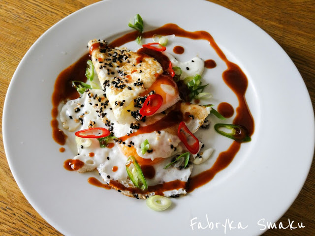

Jajka sadzone po azjatycku

Ingredients:
- 2 dymki
- 1 papryczka chili
- 2 czubate łyżki mieszanki białego i czarnego sezamu
- 4 duże jajka
- 2 łyżki sosu hoisin
Recipe:
- Przytnij dymki oraz chili i pokrój je w cienkie ukośne plasterki.
- Włóż dymkę i chili do miski z lodowatą wodą, czerwonym octem winnym i odstaw na później.
- Upraż na patelni sezam przez 1 min.
- Skrop sezam 1 łyżką oliwy i wbij na patelnię jajka.
- Po usmażeniu jajek jak lubisz, przełóż je na talerze.
- Skrop całość sosem hoisin (można rozrzedzić wodą).
- Posyp jajka odcedzoną dymką i chili. Nakłuj żółtka.